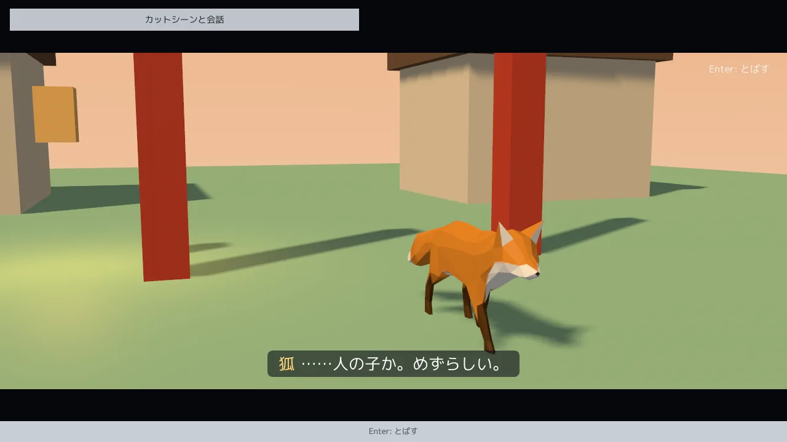
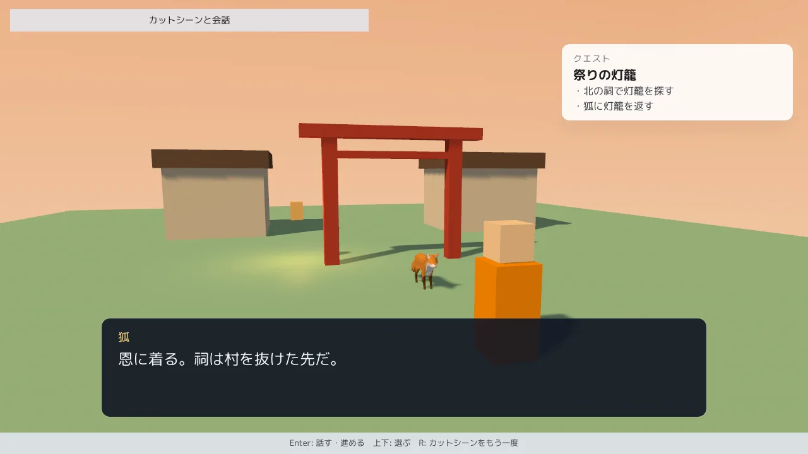

MitiruEngine
MitiruEngine
3D ACTION 6 / 6
カットシーンと会話
カメラが降りてくる演出、選択肢のある会話、クエストを、テキストエディタで書いたファイルから動かします。どれも巻き戻しに乗ります。

cutscene3d。カットシーンの 8 秒目で、門をくぐった狐を近くのカメラが映しています。起動は mitiru_host.exe cutscene3d/cutscene3d.dll です。カットシーンは Enter で飛ばせます。続く会話は Enter で進め、上下で選択肢を選びます。全文はサンプル集にあります。サンプルのビルドの仕方と起動する場所は、1 ページ目の始め方にあります。
状態に置くのは時刻と旗だけ
カメラの動き、狐の歩く道、字幕、会話の文言は、ゲームの状態ではなく、読み取り専用のデータです。DLL が読み込みの時に表にして持ちます。ゲームの struct に置くのは、カットシーンの再生の時刻、会話の位置、旗、クエストの進み具合だけです。
#include <mitiru/narrative/NarrativeFile.hpp>
#include <mitiru/narrative/NarrativeHud.hpp>
namespace nr = mitiru::narrative;
nr::NarrativeFile<nr::Sequence> g_intro("mygame/assets/intro.seq.json", &nr::loadSequenceFile);
nr::NarrativeFile<nr::DialogueScript> g_gate("mygame/assets/gate.talk", &nr::loadDialogueFile);
struct MyGame
{
nr::SequencePlayback cut{}; // 再生の時刻 (12 byte)
nr::DialogueState talk{}; // 会話の位置 (44 byte)
nr::NarrativeVars vars{}; // 旗と数
nr::QuestLog quests{}; // クエストの進み具合
};
絵はこの時刻から毎回求めます。同じ時刻なら必ず同じ絵になるので、5 ページ目の巻き戻しでカットシーンの途中へ戻ると、カメラも狐も字幕もその時刻の姿に戻ります。
カットシーンを書く
カットシーンは JSON の 1 ファイルです。カメラは区間と優先度を持ち、各時刻で一番優先度の高いカメラが映ります。替わり目は blendIn 秒かけて前のカメラから混ぜます。役者の位置、流すアニメの区間、音や印の合図、字幕、暗転、上下の帯も同じファイルに書きます。
{
"duration": 10.0, "blendOut": 1.0,
"cameras": [
{"name": "fly", "priority": 1, "start": 0, "end": 6.5, "keys": [
{"t": 0, "eye": [0, 16, 26], "target": [0, 0, 5], "fov": 50},
{"t": 6.5, "eye": [2.6, 2.3, -8.8], "target": [0, 1, 1], "fov": 55}]},
{"name": "fox_close", "priority": 2, "start": 5, "end": 9, "blendIn": 1.2, "keys": [...]}
],
"actors": [{"name": "fox", "keys": [{"t": 2.8, "pos": [0, 0, 8.6], "yaw": 180}, {"t": 8, "pos": [0, 0, -0.6], "yaw": 180}]}],
"clips": [{"actor": "fox", "clip": "Walk", "start": 2.8, "end": 8.3, "blendIn": 0.3, "blendOut": 0.3}],
"cues": [{"t": 7.2, "kind": "sound", "name": "step"}, {"t": 10, "kind": "call", "name": "start_talk"}],
"subtitles": [{"start": 7.4, "end": 9.6, "speaker": "狐", "text": "……人の子か。めずらしい。", "key": "intro.3"}],
"fade": [[0, 1], [1.2, 0]],
"letterbox": [[0, 1], [9.2, 1], [10, 0]]
}
ゲームの側は、毎フレーム時刻を進めて合図を受け、draw で時刻からカメラを求めます。
void update(Input in, Hud hud, float dt)
{
const nr::Sequence& seq = g_intro.get();
const auto onCue = [&](const nr::Cue& c) { if (!nr::playCue(c, hud) && c.name == "start_talk") { /* 会話を始める */ } };
if (in.confirmPressed()) { nr::skipSequence(cut, seq, onCue); } // 残りの call の合図だけ届く
else { nr::advanceSequence(cut, seq, dt, onCue); }
nr::pushSequence(hud, cut, seq); // 字幕を画面 (RML) へ
}
void draw(Screen& s) const
{
const nr::CameraShot c = nr::evaluateCamera(g_intro.get(), cut.time, myGameplayCamera);
s.camera3D(c.eye, c.target, c.up, Deg{c.fovDeg}, c.nearDist, c.farDist);
}
カメラの軌跡は Blender でも作れます。tools/blender/mitiru_level_export.py の Export Camera Path がカメラのアニメを鍵の JSON に書き出し、カットシーンからは "path": "fly.camera.json" で読みます。mitiru_host を --watch-assets <フォルダ> 付きで起動しておけば、保存するたびに実行中のゲームが読み直します。巻き戻しのバーで気になる時刻へ戻し、JSON を直して保存すれば、その時刻の絵がすぐ変わります。
会話とクエスト

会話は 1 行に 1 つの台詞を書く台本です。【名前】 で話者を決め、@choice で選択肢、@if で分岐、@set で旗を書きます。
*門 【狐】 祭りの灯籠が一つ、北の祠から戻らない。探してきてくれないか。 @choice 引き受ける -> 受ける @choice 断る -> 断る *受ける @set lantern = 1 【狐】 恩に着る。祠は村を抜けた先だ。 @end
クエストは JSON の表に、始まる条件と目標が済んだと見なす条件を旗の式で書きます。会話が lantern を 1 にすると、次の updateQuests でクエストが始まります。
{"quests": [{"id": "lantern", "title": "祭りの灯籠", "start": "lantern == 1",
"objectives": [{"id": "shrine", "text": "北の祠で灯籠を探す", "done": "lantern_found"}]}]}
画面は RML (HTML / CSS の方言) で書きます。pushDialogue と pushQuests が台詞、選択肢、クエストを毎フレーム送り、選択肢のボタンは dispatch('talk.choose', 'i', c.i) で選んだ番号を C++ へ返すだけです。台詞と字幕には訳の鍵が付くので、英語の訳を strings.json に書けば、利用者の言語に合わせて替わります。
会話を 1 本出すだけなら、narrative::Talk を状態に置き、話しかけたときの start と毎フレームの update を呼びます。update は台詞を送り、選択肢を選び、上の値を UI へ送ります。画面はエンジンに同梱の会話の窓を、RML に 2 行書いて読み込みます。cutscene3d もこの形で会話を出しています。
nr::Talk talk; // 状態に置く (52 byte)
if (in.pressed(Key::E)) { talk.start(hud, g_fox.get(), "門"); } // 話しかける
talk.update(in, hud, g_fox.get()); // 毎フレーム
<link type="text/rcss" href="mitiru:talk.rcss"/> <!-- RML の head -->
<include src="mitiru:talk.rml"/> <!-- RML の body -->
旗を使う台本なら、NarrativeVars も状態に置いて start と update に渡します。
確かめる
台本は mitiru_host --headless-3d --backend dx12 --capture-dir D --capture-every 60 で 1 秒ごとに撮れます。合図の mark は --state-trace に出るので、カットシーンの何フレーム目に何が起きたかを数字で確かめられます。入力の台本で会話まで進め、--record と --replay-test で同じ入力から同じ状態になることも確かめられます。書き方の詳細は CUTSCENES.md と DIALOGUE.md にあります。